Hunting via the Kubernetes road#
- Open the Kubernetes App (CTRL + K, then type Kubernetes). You'll see your cluster being fully observed.
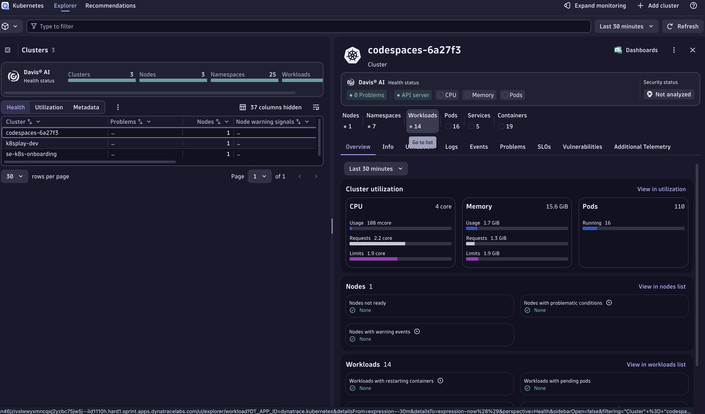
- On the right-hand side, click Workloads to open the Workloads page.
- Select the
todoappworkload.
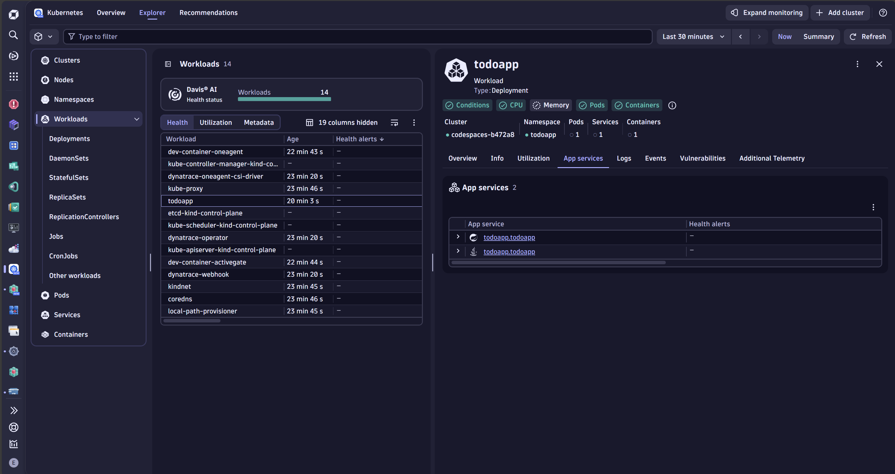
- On the Overview, scroll down and open the App Services tab. Dynatrace groups telemetry from distributed traces and spans into "Services" for you.
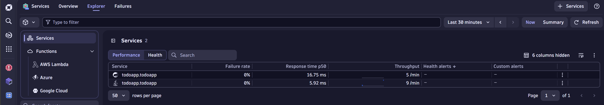
- Click the TodoController service, then View Traces in the top-right corner.
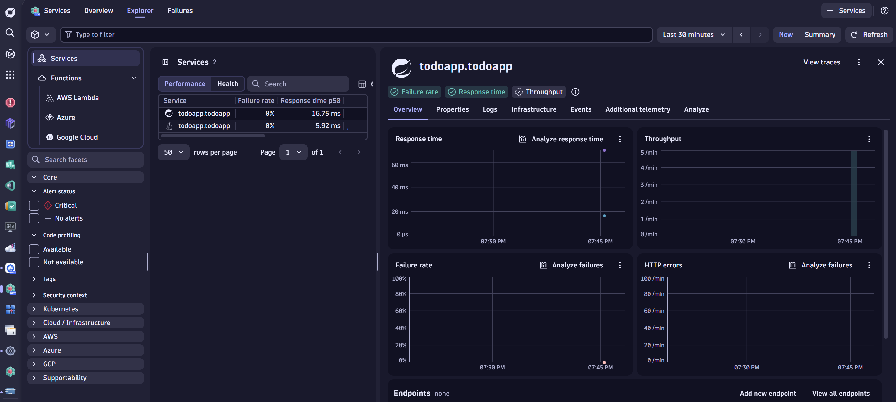
- This opens every trace that flowed through your application.
You'll see traces named clearCompletedTodos that took only a couple of milliseconds and throw no errors. The response code is 200 — but a 200 doesn't mean the app did what we wanted.
This particular span was just 2.98 ms. On the right, the tracing details show how much data was captured automatically 🤩.
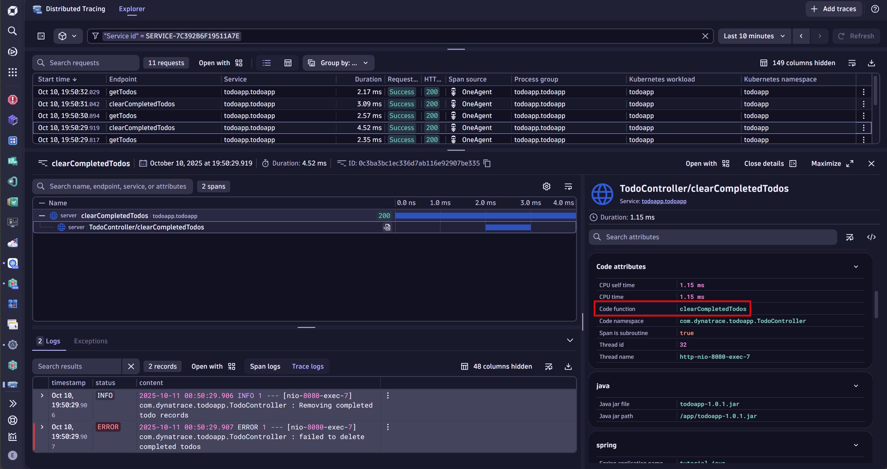
In the second span node, under Code Attributes, we see Code function: clearCompletedTodos and Code Namespace: com.dynatrace.todoapp.TodoController. Now we know exactly which method and package to debug. Let's open the Live Debugger.
Confirm Dynatrace captured the failed clear in the logs (the bug's fingerprint):
Open the Live Debugger#
Type CTRL + K > Live Debugger for fast access.
First, customize your debug session to match the workload. Click the pencil icon (Customize your debug session) and add the filters namespace:todoapp and k8s.workload.name:todoapp. This info was also visible in the trace. Use reusable filters (not instance-specific ones) so breakpoints survive pod restarts and recycles.
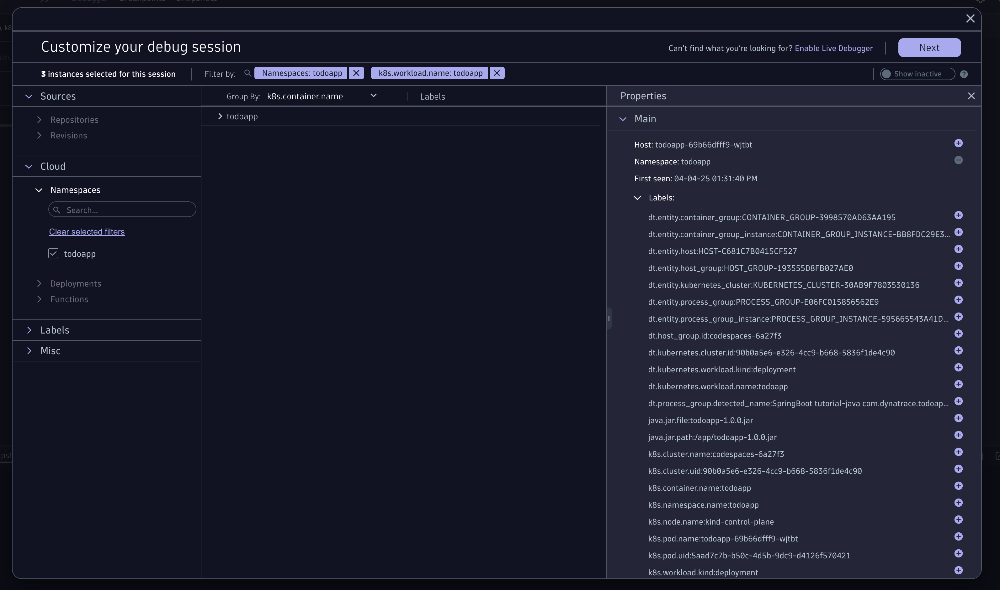
Connect the GitHub repository (manually)#
Once you click next, no repository is found for this application (none was configured). Add it manually:
-
Click the + to add one.
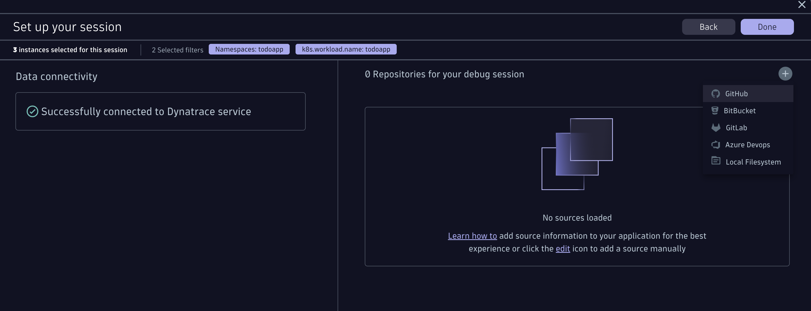
-
Click authenticate. A window opens where you authenticate with your GitHub account. Why? We take security seriously — the source code never leaves the browser (the client).
-
Organisation:
dynatrace-wwse - Repository:
enablement-live-debugger-bug-hunting
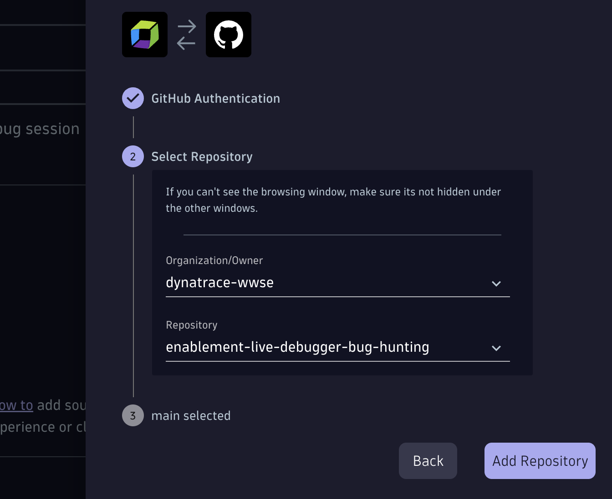
- Click Done. You should now see:
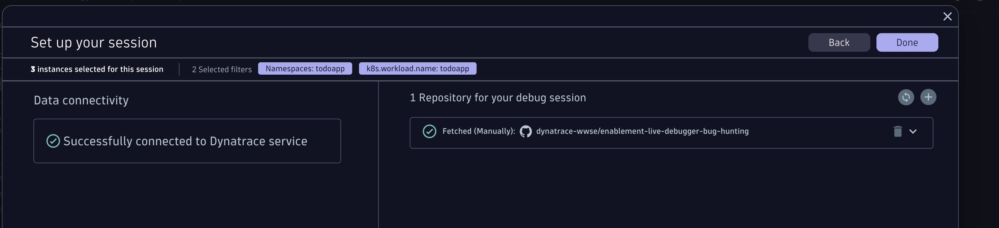
Navigate to TodoController.java#
Open the Source Code menu on the left and navigate to todoapp > src > main > java > com > dynatrace > todoapp > TodoController.java, or use search and type TodoController.
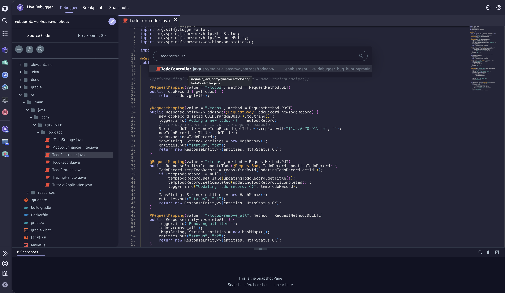
Find the clearCompletedTodos method (line 72):
70@RequestMapping(value = "/todos/clear_completed", method = RequestMethod.DELETE)71public ResponseEntity<?> clearCompletedTodos() throws InterruptedException {
Set a non-breaking breakpoint on the return line (line 90) so we capture all variable values before the method returns:
90return new ResponseEntity<>(entities, HttpStatus.OK);
Click just to the left of the line number, set it, and wait for the status to change to Active.
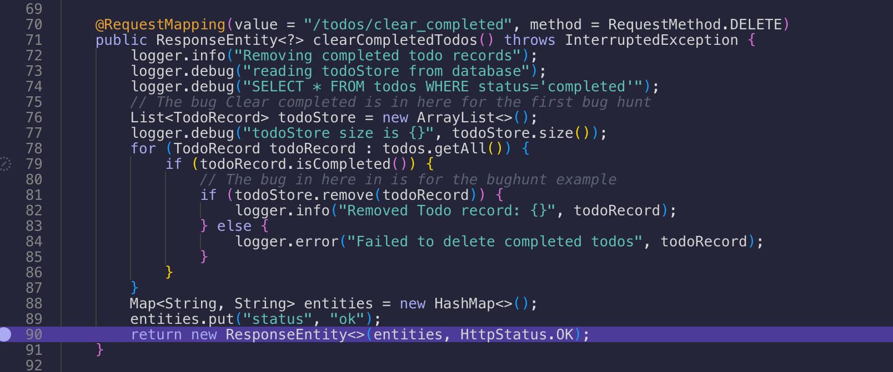
Go back to the TODO app and click Clear completed again. Return to the Live Debugger and open the captured Snapshot — inspect the variables and their values.
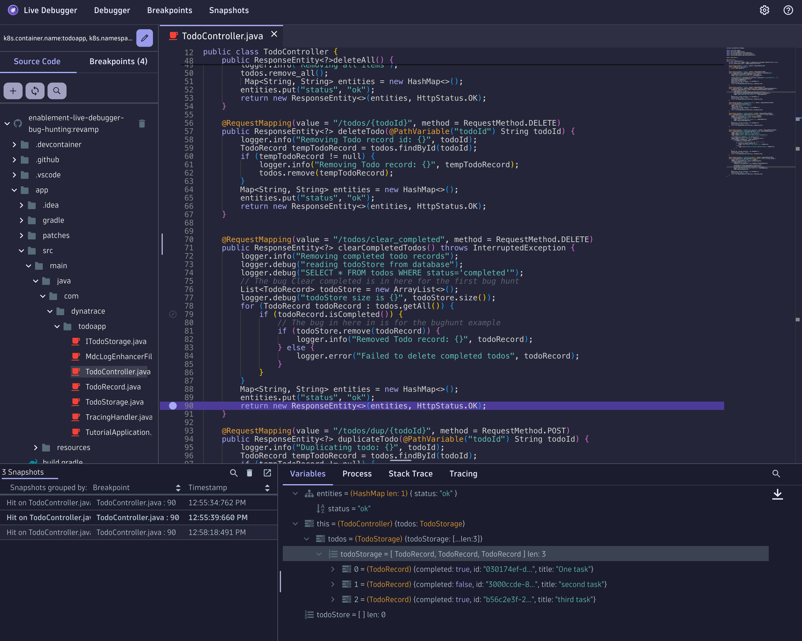
Do you see the bug? We can see two variables: todos with length 3 and todoStore with length 0.
On line 81, todoStore.remove(todoRecord) operates on a newly instantiated todoStore. The developer forgot that the persistence layer already provides the array — it should be todos. With todoStore empty, nothing is ever removed.
Seeing is believing 🤩
With Dynatrace we navigated from the Kubernetes cluster → workload → its traces → the exact method, namespace, and variables. One click set a non-breaking breakpoint in a production app on Kubernetes, and a single snapshot revealed the bug. In production!
Fix the bug and redeploy#
Open TodoController.java, apply your change, then compile and redeploy with the helper function:
Then verify the bug is gone — add tasks, complete them, and click Clear completed:
Verify the bug is gone — add more tasks, click Clear completed, and watch them disappear gracefully. Amazing!